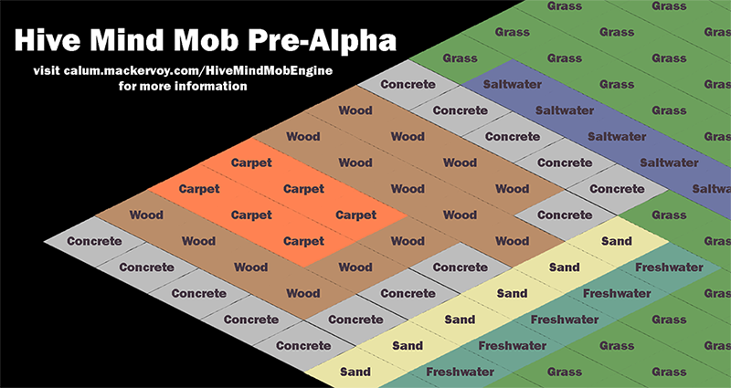
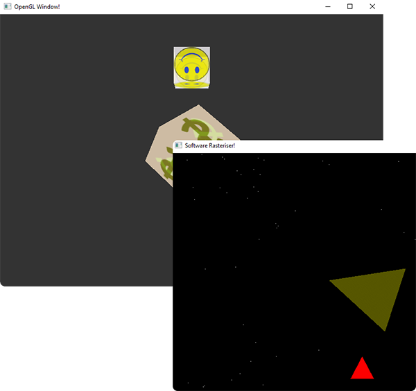

Open Source
Open Source is a model of development where the source code is not only publicly available but free to distribute and reuse.
In all of these projects input from anyone who wants to get involved would be great so contact me or pull the repo.
Most of the projects I do for myself fit into this category because I try to write as much of my code open source as possible.
Select a project for more information.
Hive Mind Mob (Game in C++)
Hive Mind Mob is an early-development open-source game for PC in which players control a hive-minded group within a simulated modern-day society. The society grows and develops with the player's influence and the influence of many other non-player entities, and the designs have a major focus on the effect of technological development, which has drastic impacts on the player's surroundings and abilities as time progresses.
Alerta (Ionic App for Android)
Alerta is an app library in-development using Ionic to provide the framework to apps for communicating locations within a network of trust. It is being developed to be general-purpose, with an initial use case assisting anti-raid networks in tracking raids and responding to them.
For Clients
If you have a project in mind please do not hesitate to contact me. Refer to this section and the following section for my experience, although I am a fast learner if you have projects which do not 1:1 correlate to anything listed. Most of the code here is not publicly available.
Mailing list management in the NHS
Developed a node.js server to provide the back-end for a mailing list management service being used within the NHS. Provided other management capabilities via a REST API and a web app.
Large SQL Database Migration for Karma Computing
Involving large quantities of data from an old system to one which was radically restructed and stored with a different DBMS.

Other Projects
Anatome (App for Android)

Collaborated as part of a team to produce an Android application using Android Studio. The app is focussed around mental and physical wellbeing for students and has a breathing-assistance feature, a thought diary for e-Cognitive Behavioural Therapy (my role was mostly in this feature) and a feature for monitoring alcohol consumption. I was also responsible for User Experience. Live on Google Store here.
Dissertation
Used OpenCL to produce a distributed version of Goal Oriented Action Planning (GOAP) which is essentially a method to model an AI with pathfinding. GOAP has been known to present tremendous benefits to the AI of a game, but it has the unfortunate property of using lots of the CPUs resources which an AI system rarely has in abundance. The software was deployed on the iGPU and GPU devices with each core acting as a single agent. The theory was that executing it on the higher-spec GPU would only be beneficial if it wasn't also responsible for rendering, but that executing on an idle integrated graphics processor (iGPU) would improve performance when the GPU was handling rendering. The results reflected this.
Games (C#/.NET & C/C++)
TITLE (Competition)

Designing, coding and producing the graphical assets for a 2D platformer in Unity (as part of a 72-hour programming competition by Ludum Dare). Scripts written in C#/.NET.
Capitalists, Commies and Thatcher Zombies (C/C++)

Turn-based/real-time strategy hybrid and its supporting engine.
Capture the Castle (C/C++)

Real-time strategy game and 2D physics simulation.
Graphics Rasteriser
Developed a custom graphics rasteriser in C++ for execution on the CPU and another using OpenGL.
Web Technologies
Set-up and administration of an Apache Linux server using configuration files and PHP.
Java servlets simulating a dog kennel service.
Websites on flags, JavaScript and the health benefits of buckfast
Databases
Use of Hibernate/HQL for Java-database interaction.
Created a bus system in MySQL with a Java interface. Other SQL databases using Microsoft Access and Microsoft SQL Server.
Machine Learning
Findings and Comparison (.pdf)
Solving classification problems using Genetic Algorithm and Ant Colony Optimisation methods. Both were written in Java, the former using the EpochX library and the latter Myra, a highly-modular framework developed at University of Kent. I am knowledgable in the workings of other methods of machine learning such as neural networks and particle swarms and have a very keen interest in this field.
Web Browser (Java)

Capable of basic functionality such as displaying HTML, maintaining consistent bookmarks and a web histroy etc.
Misc
TinyOS operating system on a USB as part of a network, written in nesC, a variant of C designed for TinyOS.
The shell for a MINIX operating system, written in C.

Traffic light and lift simulations in Assembly.
Modelling of a complex factory system in VDM-SL.
Many smaller Java projects including algorithms for sorting and the bin-packing problem and a stock-purchasing program produced during a Scott Logic hackathon in Newcastle.
Experience in Test-Driven Development, SCRUM and other agile methodologies.